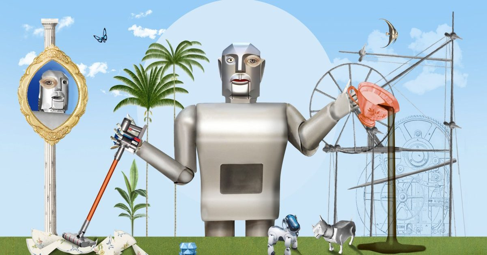

Прорывы ИИ в робототехнике не изменят вашу жизнь в ближайшее время
История представляет собой сотрудничество между MIT Technology Review и Aventine, некоммерческим исследовательским фондом, который создает и поддерживает контент о том, как технологии и наука меняют наш образ жизни.
Робот в форме человека - белый с черной головой и туловищем - появляется на видеоканалах.
Возможно, вы видели, как он танцует или...